1.4 Electrons and Ions
Ionisation energy, orbitals, electron configurations and chemical properties
1.4 Electrons and Ions
本页对应 1.4 Electrons - Ions.pdf.pdf，整理 ionisation energy、electronic structure、orbital shapes、electron configurations 以及它们与 chemical properties 的关系。专业词汇保留 English，重点强调 successive ionisation-energy jumps 和 orbital filling rules。
Learning objectives
学完本页后，你应该能够：
- define first、second and successive ionisation energies；
- explain ionisation-energy trends using nuclear charge、distance、shielding and electron repulsion；
- identify shells、subshells and orbitals，and describe
sandporbital shapes； - apply the Aufbau principle、Pauli exclusion principle and Hund’s rule；
- write full、short-hand and box electron configurations；
- use electron configuration to explain periodic-table blocks and chemical properties。
1.4.1 Ionisation energy
Definitions
The first ionisation energy is the enthalpy change required to remove one electron from each atom in one mole of gaseous atoms to form one mole of gaseous 1+ ions：
\[ \ce{X(g) -> X+(g) + e-} \]
It is measured in kJ mol⁻¹。
The second ionisation energy removes an electron from one mole of gaseous X⁺ ions：
\[ \ce{X+(g) -> X^{2+}(g) + e-} \]
Successive ionisation energies continue to remove one electron at a time：
\[ \ce{X^{(n-1)+}(g) -> X^{n+}(g) + e-} \]
Successive ionisation energies of the same element always increase overall because each remaining electron is attracted to a more positively charged ion. A very large jump occurs when the next electron is removed from a shell closer to the nucleus。
Factors affecting ionisation energy
- Nuclear charge：more protons create stronger electrostatic attraction and increase ionisation energy。
- Distance from the nucleus：an electron in a higher shell is further away and is easier to remove。
- Shielding：inner-shell electrons repel outer electrons and reduce the attraction from the nucleus。
- Electron repulsion：paired electrons in the same orbital repel one another，so one may be removed more easily。
For a simple comparison，higher nuclear charge increases ionisation energy，whereas greater distance and shielding decrease it。
1.4.2 Successive ionisation energies
Reading a successive-ionisation-energy graph
The graph is plotted against the number of electrons removed。Small increases usually show electrons being removed from the same shell；a large jump indicates that a new shell is being accessed。
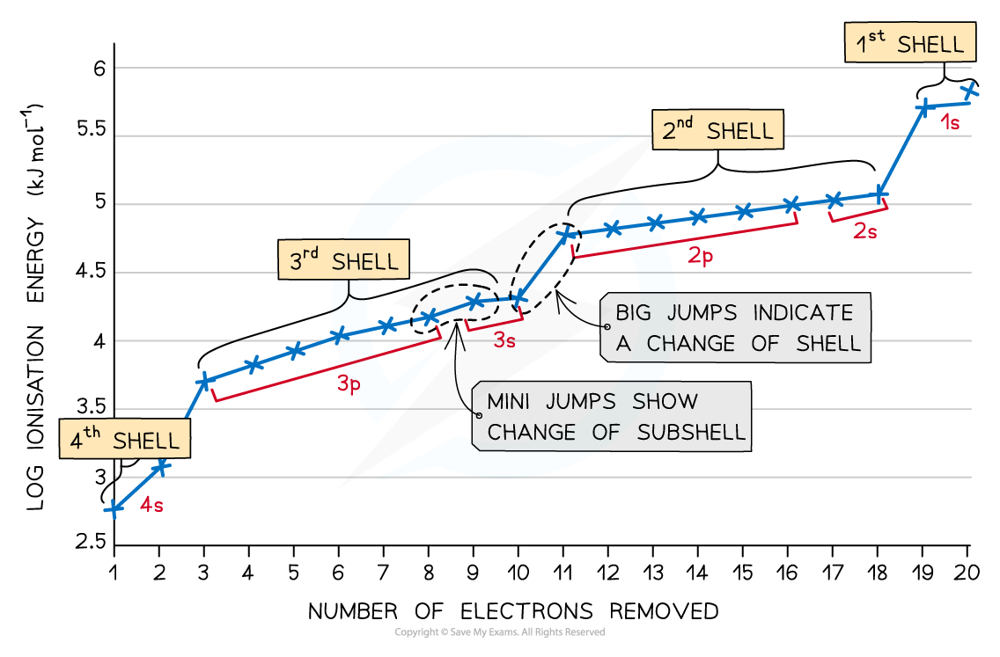
For calcium，the electron configuration is：
\[ \ce{Ca}:1s^2\ 2s^2\ 2p^6\ 3s^2\ 3p^6\ 4s^2 \]
The first two electrons are removed from the 4s subshell. The third electron is removed from the 3p subshell，so there is a large jump between the second and third ionisation energies。
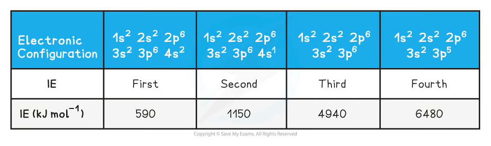
Inferring the group of an element
The number of electrons removed before the first large jump equals the number of outer-shell electrons in a main-group element。This can identify the group：
- large jump after the first electron → Group 1；
- large jump after the second electron → Group 2；
- large jump after the third electron → Group 3；
- large jump after the seventh electron → Group 17。
For an unknown element with the following values：
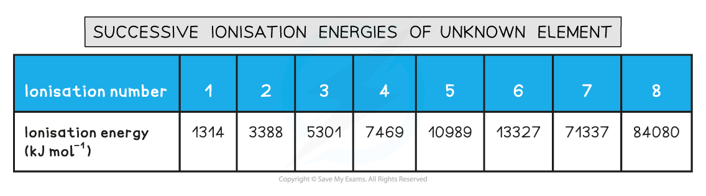
There is a large jump between the second and third values，so the element has two outer-shell electrons and is expected to be in Group 2。
Periodic trends
Across a period，first ionisation energy generally increases because nuclear charge increases while the outer electron remains in the same principal shell. There are two important small decreases：
- from Group 2 to Group 3：the electron removed from Group 3 is in a higher-energy
psubshell rather than anssubshell； - from Group 5 to Group 6：the Group 6
psubshell contains a pair of electrons，and electron repulsion makes one electron easier to remove。
Down a group，first ionisation energy generally decreases because the outer electron is in a higher shell，further from the nucleus，and experiences more shielding。
Data comparison
| Element | Atomic number | First IE | Second IE | Third IE | Fourth IE |
|---|---|---|---|---|---|
| Na | 11 | 494 | 4560 | 6940 | 9540 |
| Mg | 12 | 736 | 1450 | 7740 | 10500 |
| Al | 13 | 577 | 1820 | 2740 | 11600 |
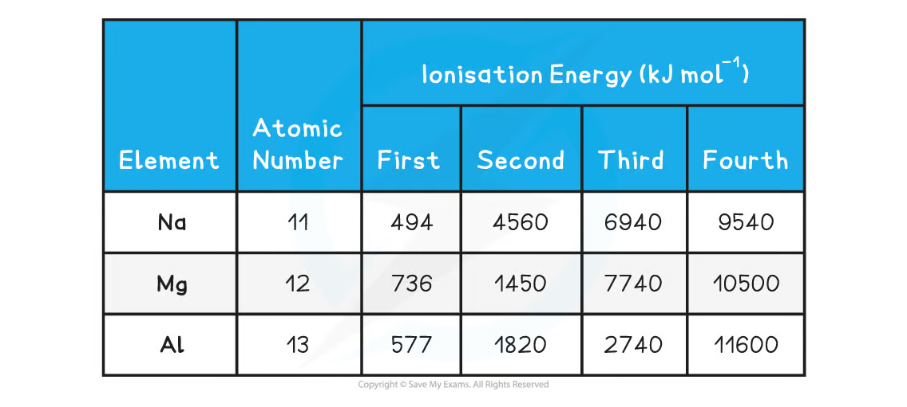
The large jumps occur after one electron for sodium、after two electrons for magnesium and after three electrons for aluminium，matching their outer electron configurations 3s¹、3s² and 3s²3p¹。
1.4.3 Electronic structure: shells, subshells and orbitals
Shells and subshells
Electrons occupy principal shells identified by the principal quantum number n = 1, 2, 3...。Each shell contains one or more subshells：
- shell 1:
1s； - shell 2:
2s, 2p； - shell 3:
3s, 3p, 3d； - shell 4:
4s, 4p, 4d, 4f。
Each s subshell contains one orbital；each p subshell contains three orbitals；each d subshell contains five orbitals；each f subshell contains seven orbitals。Every orbital holds a maximum of two electrons。
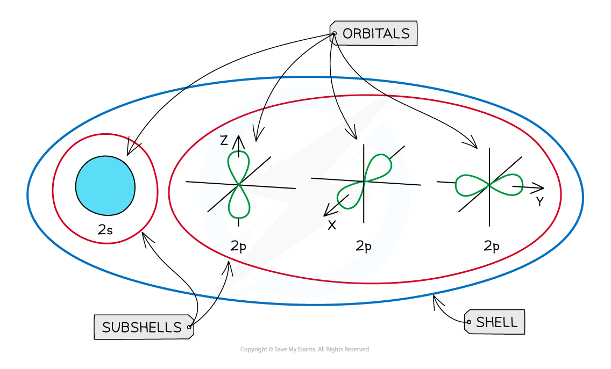
Orbital shapes
An orbital is a region of space where there is a high probability of finding an electron。
- An
sorbital is spherical。 - A
psubshell contains three dumbbell-shaped orbitals，oriented at right angles to one another along thex、yandzaxes。 - The three
porbitals have the same energy in an isolated atom。
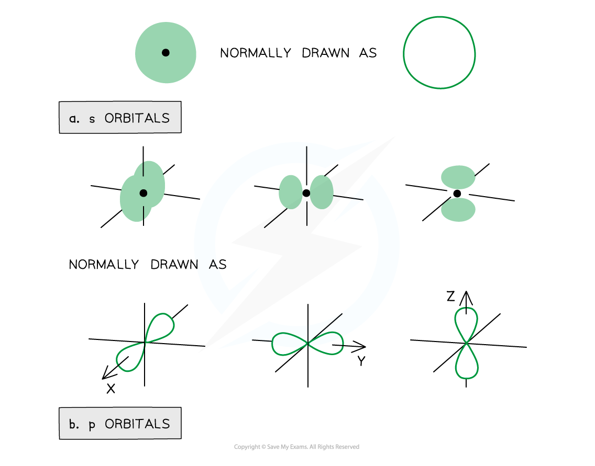
The two lobes of a p orbital are opposite phases of the orbital wavefunction. The sign does not mean positive or negative electric charge。
Electron spin and orbital filling
An electron has one of two possible spin directions，often shown by arrows ↑ and ↓。The two electrons in one orbital must have opposite spins。
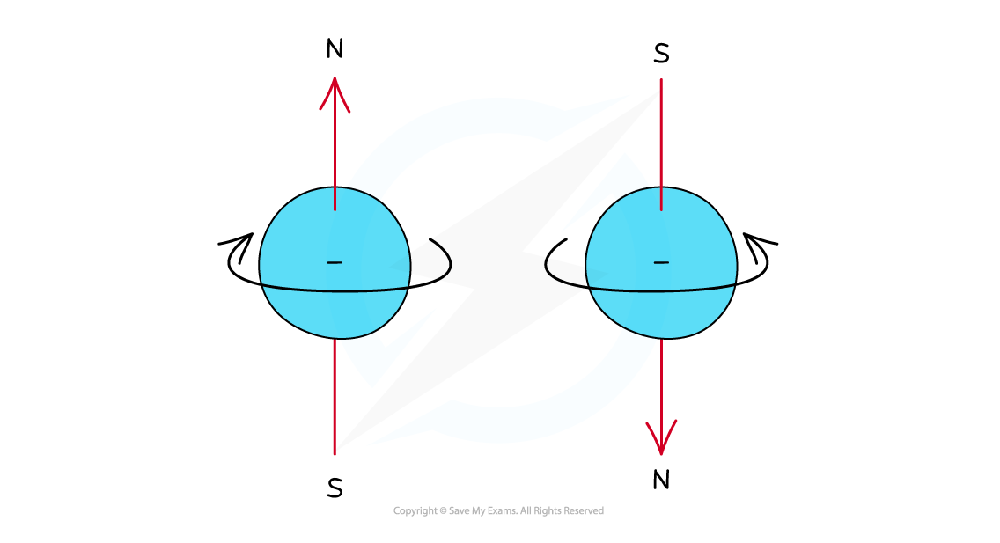
The Pauli exclusion principle states that an orbital can contain a maximum of two electrons，and they must have opposite spins。
The Hund’s rule states that electrons occupy degenerate orbitals singly with parallel spins before pairing。For p³：
\[ \ce{p^3}:\quad\boxed{\uparrow}\ \boxed{\uparrow}\ \boxed{\uparrow} \]
For p⁴，the fourth electron pairs in one of the orbitals：
\[ \ce{p^4}:\quad\boxed{\uparrow\downarrow}\ \boxed{\uparrow}\ \boxed{\uparrow} \]
1.4.4 Electron configurations and chemical properties
Energy order of orbitals
The Aufbau principle states that electrons occupy the lowest-energy available orbital first。The common filling order is：
\[ 1s\rightarrow2s\rightarrow2p\rightarrow3s\rightarrow3p\rightarrow4s\rightarrow3d\rightarrow4p \]
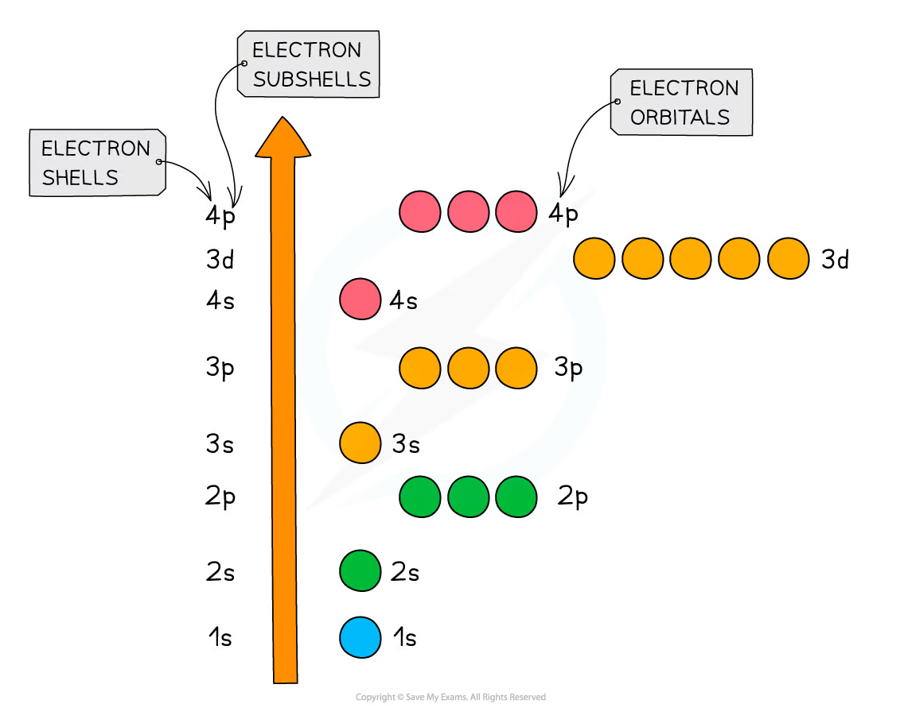
When forming transition-metal ions，the 4s electrons are removed before the 3d electrons because the 4s orbital becomes higher in energy once the 3d subshell is occupied。
Periodic-table blocks
The block of an element is determined by the subshell being filled by its highest-energy electron：
s-block：Groups 1 and 2；p-block：Groups 13 to 18；d-block：transition metals；f-block：lanthanides and actinides。
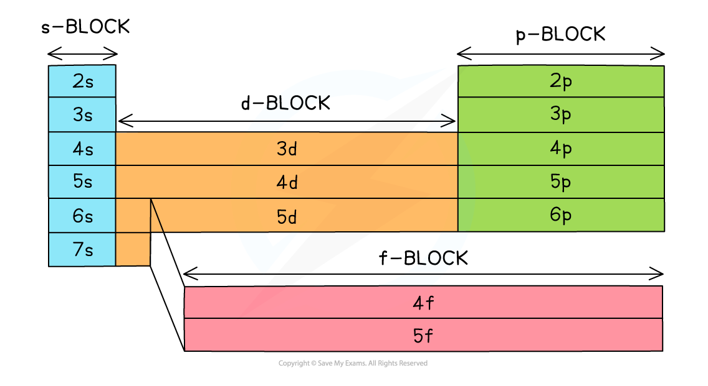
Electron-configuration notation
The notation 1s² means：
1= principal quantum number / shell number；s= subshell；2= number of electrons in that subshell。
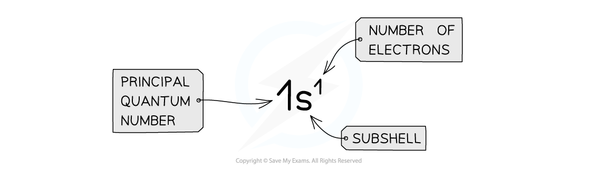
The maximum occupancy is s²、p⁶、d¹⁰ and f¹⁴。
Examples of configurations
| Species | Full electron configuration | Short-hand configuration |
|---|---|---|
| H | 1s¹ |
1s¹ |
| C | 1s² 2s² 2p² |
[He] 2s² 2p² |
| Na | 1s² 2s² 2p⁶ 3s¹ |
[Ne] 3s¹ |
| Ca | 1s² 2s² 2p⁶ 3s² 3p⁶ 4s² |
[Ar] 4s² |
| Fe | 1s² 2s² 2p⁶ 3s² 3p⁶ 4s² 3d⁶ |
[Ar] 4s² 3d⁶ |
For ions，first write the neutral atom configuration and then remove or add electrons according to the charge。For transition-metal cations，remove 4s electrons before 3d electrons：
\[ \ce{Fe}: [Ar]4s^2 3d^6 \]
\[ \ce{Fe^{2+}}: [Ar]3d^6 \]
Orbital box notation
Box notation shows individual orbitals and electron spins。For example，a p³ subshell is filled as three separate parallel-spin electrons：
The full configuration of calcium can be shown as：
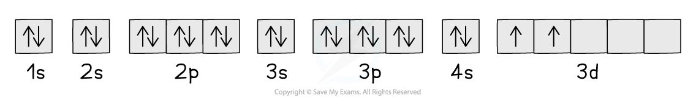
Exceptions: chromium and copper
Some transition metals have configurations that are more stable with a half-filled or fully filled 3d subshell：
\[ \ce{Cr}: [Ar]3d^5 4s^1 \]
\[ \ce{Cu}: [Ar]3d^{10}4s^1 \]
The small energy difference between 4s and 3d allows one 4s electron to occupy 3d，giving the extra stability of 3d⁵ or 3d¹⁰。
Chemical properties and electron configuration
Elements in the same group have the same number of outer-shell electrons，so they show similar chemical properties。Across a period，the principal shell stays the same while the number of valence electrons increases，causing gradual changes in bonding and reactivity。
For example，Group 1 metals have a general outer configuration ns¹ and tend to lose one electron to form M⁺ ions。Group 17 elements have ns²np⁵ and tend to gain one electron to form X⁻ ions。Noble gases have a complete outer shell and are relatively unreactive。
Common mistakes and exam checklist
Source note
本页面对应：Note per Chapter/Note per Chapter/1.4 Electrons - Ions.pdf.pdf。页面中的 ionisation-energy tables and graph、orbital diagrams、periodic-table blocks、energy-order diagram 和 box-notation figures 均从该 PDF 的 embedded images 独立提取，并转换为 RGB white-background PNG 后保存到 assets/notes/electrons-ions/。